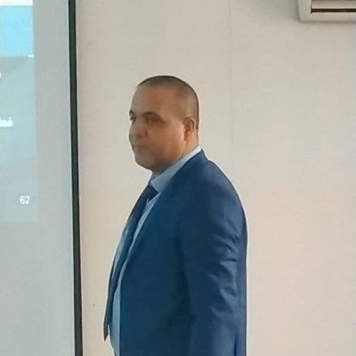

Maroua TIKAT
Responsable Projet Web
Enseignant référent pour le module XT1205. Expert en développement Front-end et Back-end (PHP), elle évalue la qualité de votre code, le respect des maquettes et valide vos dépôts Git finaux

Des experts du numérique dédiés à votre réussite en première année de Bachelor.
Responsable Projet Web
Enseignant référent pour le module XT1205. Expert en développement Front-end et Back-end (PHP), elle évalue la qualité de votre code, le respect des maquettes et valide vos dépôts Git finaux

Professeur d'Algorithmique & Ekements de Programmation
Spécialiste de la programmation structurée. Avec eux, vous apprendrez à dompter l'allocation mémoire, les pointeurs et la manipulation complexe des listes chaînées.
Réseaux 1 : Les fondamentaux
Il vous accompagne dans la compréhension approfondie des systèmes d'exploitation. Côté réseaux, il supervise vos travaux de simulation d'infrastructures sur Cisco Packet Tracer.

Gestion des version
De l'écriture de requêtes SQL optimisées à la liaison de vos dépôts GitHub directement dans VS Code, il s'assure que vous maîtrisez les outils de l'industrie.